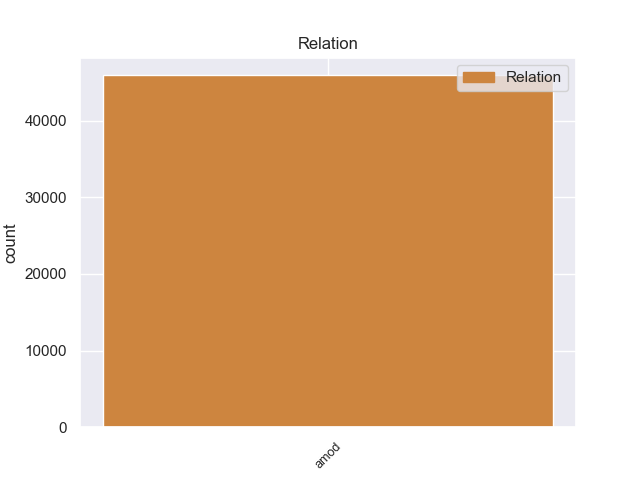
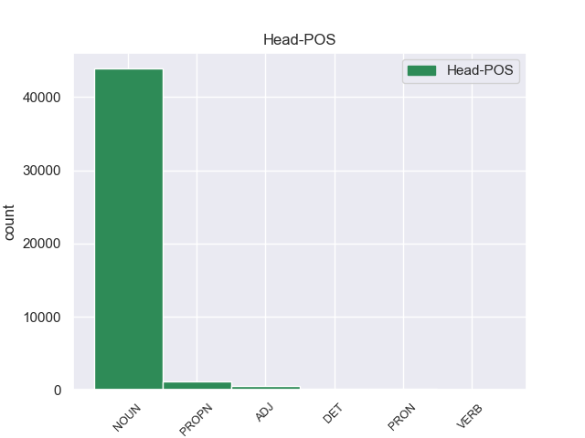
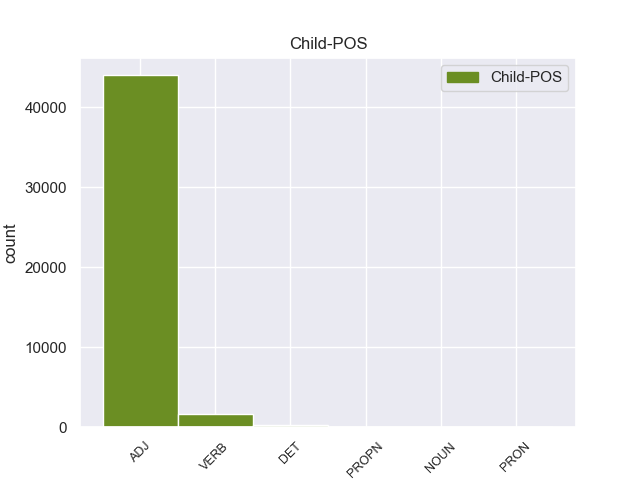

Distribution of features within this leaf



Agreement Rules sorted by frequency.
- When the dependent token is the adjectival modifier(amod) of the head token,
1 А _ _ _ _ 0 _ _ _
2 может _ _ _ _ 0 _ _ _
3 быть _ _ _ _ 0 _ _ _
4 , _ _ _ _ 0 _ _ _
5 кто-то _ _ _ _ 0 _ _ _
6 - _ _ _ _ 0 _ _ _
7 на _ _ _ _ 0 _ _ _
8 другом другой ADJ _ Case=Loc|Degree=Pos|Gender=Masc|Number=Sing 9 amod 9:amod _
9 конце конец NOUN _ Animacy=Inan|Case=Loc|Gender=Masc|Number=Sing 0 _ _ _
10 тоже _ _ _ _ 0 _ _ _
11 пробует _ _ _ _ 0 _ _ _
12 ее _ _ _ _ 0 _ _ _
13 расчистить _ _ _ _ 0 _ _ _
14 ? _ _ _ _ 0 _ _ _
Disagree Examples:
1 В _ _ _ _ 0 _ _ _
2 прошлом прошлый ADJ _ Case=Loc|Degree=Pos|Gender=Neut|Number=Sing 5 amod 5:amod SpaceAfter=No
3 , _ _ _ _ 0 _ _ _
4 2002 _ _ _ _ 0 _ _ _
5 году год NOUN _ Animacy=Inan|Case=Loc|Gender=Masc|Number=Sing 0 _ _ _
6 весь _ _ _ _ 0 _ _ _
7 рынок _ _ _ _ 0 _ _ _
8 виртуальных _ _ _ _ 0 _ _ _
9 манекенов _ _ _ _ 0 _ _ _
10 " _ _ _ _ 0 _ _ _
11 держали _ _ _ _ 0 _ _ _
12 " _ _ _ _ 0 _ _ _
13 три _ _ _ _ 0 _ _ _
14 компании _ _ _ _ 0 _ _ _
15 . _ _ _ _ 0 _ _ _
1 Солидные _ _ _ _ 0 _ _ _
2 банки _ _ _ _ 0 _ _ _
3 пытаются _ _ _ _ 0 _ _ _
4 обезопасить _ _ _ _ 0 _ _ _
5 себя _ _ _ _ 0 _ _ _
6 и _ _ _ _ 0 _ _ _
7 своих _ _ _ _ 0 _ _ _
8 клиентов _ _ _ _ 0 _ _ _
9 при _ _ _ _ 0 _ _ _
10 помощи _ _ _ _ 0 _ _ _
11 ряда _ _ _ _ 0 _ _ _
12 " _ _ _ _ 0 _ _ _
13 подручных _ _ _ _ 0 _ _ _
14 " _ _ _ _ 0 _ _ _
15 инструментов _ _ _ _ 0 _ _ _
16 - _ _ _ _ 0 _ _ _
17 профессионального _ _ _ _ 0 _ _ _
18 риск _ _ _ _ 0 _ _ _
19 - _ _ _ _ 0 _ _ _
20 менеджмента _ _ _ _ 0 _ _ _
21 , _ _ _ _ 0 _ _ _
22 продвинутого продвинутый ADJ _ Case=Gen|Degree=Pos|Gender=Masc|Number=Sing 24 amod 24:amod _
23 технического _ _ _ _ 0 _ _ _
24 обеспечения обеспечение NOUN _ Animacy=Inan|Case=Gen|Gender=Neut|Number=Sing 0 _ _ _
25 и _ _ _ _ 0 _ _ _
26 повышения _ _ _ _ 0 _ _ _
27 ответственности _ _ _ _ 0 _ _ _
28 служб _ _ _ _ 0 _ _ _
29 безопасности _ _ _ _ 0 _ _ _
30 . _ _ _ _ 0 _ _ _
1 Деньги _ _ _ _ 0 _ _ _
2 стоит _ _ _ _ 0 _ _ _
3 обналичивать _ _ _ _ 0 _ _ _
4 в _ _ _ _ 0 _ _ _
5 банкоматах _ _ _ _ 0 _ _ _
6 , _ _ _ _ 0 _ _ _
7 находящихся _ _ _ _ 0 _ _ _
8 в _ _ _ _ 0 _ _ _
9 охраняемых _ _ _ _ 0 _ _ _
10 помещениях _ _ _ _ 0 _ _ _
11 с _ _ _ _ 0 _ _ _
12 постоянным постоянный ADJ _ Case=Ins|Degree=Pos|Gender=Masc|Number=Sing 13 amod 13:amod _
13 видеонаблюдением видеонаблюдение NOUN _ Animacy=Inan|Case=Ins|Gender=Neut|Number=Sing 0 _ _ _
14 . _ _ _ _ 0 _ _ _
1 В _ _ _ _ 0 _ _ _
2 Путине _ _ _ _ 0 _ _ _
3 , _ _ _ _ 0 _ _ _
4 как _ _ _ _ 0 _ _ _
5 и _ _ _ _ 0 _ _ _
6 в _ _ _ _ 0 _ _ _
7 патриотическом патриотический ADJ _ Case=Loc|Degree=Pos|Gender=Masc|Number=Sing 14 amod 14:amod SpaceAfter=No
8 , _ _ _ _ 0 _ _ _
9 по _ _ _ _ 0 _ _ _
10 своей _ _ _ _ 0 _ _ _
11 риторике _ _ _ _ 0 _ _ _
12 , _ _ _ _ 0 _ _ _
13 " _ _ _ _ 0 _ _ _
14 Единстве единство NOUN _ Animacy=Inan|Case=Loc|Gender=Neut|Number=Sing 0 _ _ _
15 " _ _ _ _ 0 _ _ _
16 , _ _ _ _ 0 _ _ _
17 виделась _ _ _ _ 0 _ _ _
18 альтернатива _ _ _ _ 0 _ _ _
19 . _ _ _ _ 0 _ _ _
1 Кроме _ _ _ _ 0 _ _ _
2 того _ _ _ _ 0 _ _ _
3 , _ _ _ _ 0 _ _ _
4 нуждаются _ _ _ _ 0 _ _ _
5 в _ _ _ _ 0 _ _ _
6 немедленной _ _ _ _ 0 _ _ _
7 доработке _ _ _ _ 0 _ _ _
8 правовые _ _ _ _ 0 _ _ _
9 нормы _ _ _ _ 0 _ _ _
10 , _ _ _ _ 0 _ _ _
11 в _ _ _ _ 0 _ _ _
12 частности _ _ _ _ 0 _ _ _
13 , _ _ _ _ 0 _ _ _
14 в _ _ _ _ 0 _ _ _
15 области _ _ _ _ 0 _ _ _
16 поощрения _ _ _ _ 0 _ _ _
17 и _ _ _ _ 0 _ _ _
18 наказания наказание NOUN _ Animacy=Inan|Case=Gen|Gender=Neut|Number=Sing 0 _ _ _
19 , _ _ _ _ 0 _ _ _
20 в _ _ _ _ 0 _ _ _
21 том _ _ _ _ 0 _ _ _
22 числе _ _ _ _ 0 _ _ _
23 и _ _ _ _ 0 _ _ _
24 материального материальный ADJ _ Case=Gen|Degree=Pos|Gender=Masc|Number=Sing 18 amod 18:amod SpaceAfter=No
25 , _ _ _ _ 0 _ _ _
26 военнослужащих _ _ _ _ 0 _ _ _
27 - _ _ _ _ 0 _ _ _
28 контрактников _ _ _ _ 0 _ _ _
29 . _ _ _ _ 0 _ _ _